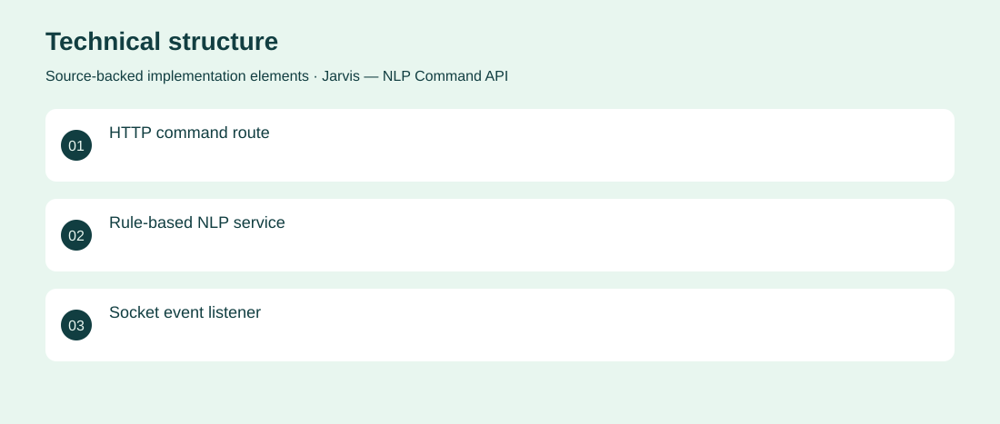

The project
Explore a small conversational interface without relying on a hosted large language model. An Express API applies Compromise NLP to simple commands and returns rule-based responses, with Socket.IO command reception alongside HTTP routes. Implemented the API structure, command service and socket event handler. Archived proof of concept supporting a small set of rule-based phrases; no autonomous task execution verified.
The problem
Explore a small conversational interface without relying on a hosted large language model.
The solution
An Express API applies Compromise NLP to simple commands and returns rule-based responses, with Socket.IO command reception alongside HTTP routes.
My contribution
Implemented the API structure, command service and socket event handler.
AI capabilities
Rule-based natural-language command parsing
Technical structure

The portfolio cover is an editorial illustration. No live product screenshot is presented for this project.
Showcase assets
{kind=link}
{kind=link}
{kind=link}
New portfolio identity. Newly designed marks are portfolio treatments, not claims of official client branding.